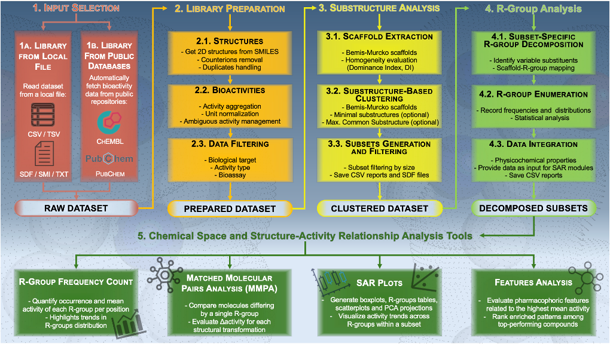
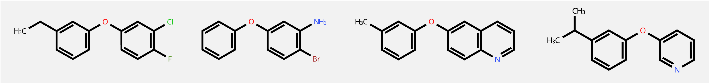
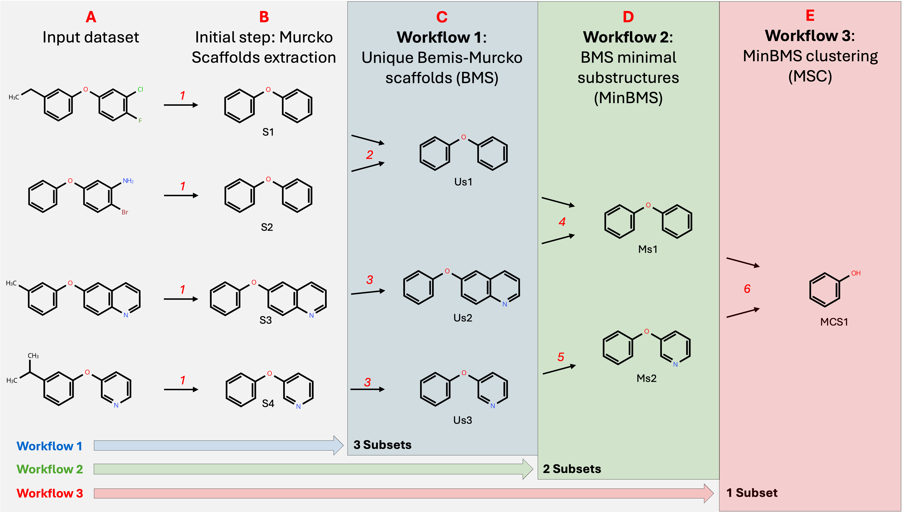
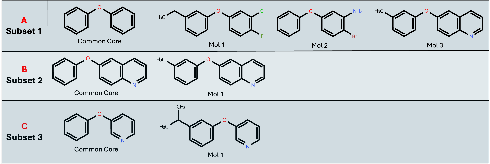
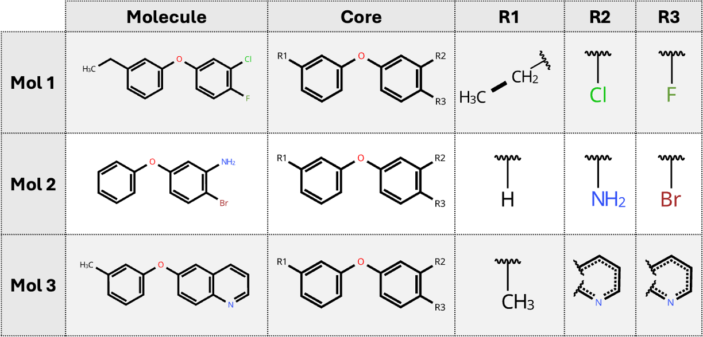

Analysis Workflow
The end-to-end manipulation of a molecular library in SARgate is orchestrated by a set of internal modules collectively referred to as the Library Manipulation Module (LMM). The full pipeline is executed as three sequential processes, whose progress and status messages are continuously reported to the user in the Analysis tab: Library Preparation, Substructure Analysis, and R-Groups Decomposition.

Library Preparation
In this phase, the user-selected molecular library (also referred to as the dataset) is prepared and standardised for downstream processing. The initial step depends on the chosen input source, while subsequent steps are shared across all sources.
Input Acquisition
Local file
- Conversion to SDF: Tabular files (CSV, TSV, XLSX) and text-based files (TXT, SMI) are converted into SDF, which is the default internal format used by SARgate.
Online database
- Fetching structures and metadata from online repositories: SARgate assembles an SDF library by retrieving compound records and associated biological activities (and additional metadata) from sources such as ChEMBL and/or PubChem. The generated SDF is saved into the default input directory. Note: this step requires an active Internet connection and may fail due to external service availability or connectivity issues.
Common Post-processing Steps
- Duplicate handling: Duplicate molecules are managed according to the selected Duplicates Handling option (see Input Files & Settings). Depending on the chosen mode, duplicates may be merged into a single entry or retained as separate records, with different strategies for representing multiple activity measurements. During this phase, SARgate also performs desalting to remove counterions and disconnected fragments commonly associated with salt forms.
- Property parsing and profiling: SARgate parses molecular properties and provides an overview of the dataset content. In particular, it reports the diversity of: activity types, biological targets, and assay classifications (typically visualised as three separate pie charts).
-
Filtering: If enabled in Input Files & Settings, filters are applied to the prepared dataset.
Supported filters include:
- Structure similarity against a user-defined query structure.
- Activity type selection (retain only molecules matching one or more activity types).
- Target selection (retain only molecules matching one or more targets).
- Assay type selection (retain only molecules matching one or more assay classifications).
Substructure Analysis
In this phase, the prepared dataset is partitioned into subsets of compounds that share a common structural motif. This common motif may be referred to as substructure, core, or scaffold. The exact sequence of steps depends on the selected Subsets Collection method (see Input Files & Settings).
Extracting Unique Bemis-Murcko Scaffolds (BMS)
If the selected method is Unique Bemis-Murcko Scaffolds (BMS), BMS Minimal Substructures (minBMS), or MinBMS Clustering (MSC), SARgate first extracts the Bemis-Murcko scaffold for each molecule in the prepared dataset and enumerates the set of unique scaffolds.
Dominance Index (DI) of Scaffold Distribution
During scaffold extraction, SARgate estimates the structural homogeneity of the dataset using a Dominance Index (DI), which combines a richness component (how many distinct scaffolds exist relative to the number of molecules) and a dominance component (how concentrated the dataset is around one or a few scaffolds).
DI = w · D + (1 − w) · R
With D = normalised Simpson/Herfindahl dominance term computed from Σ pᵢ² (0 for uniform distributions, 1 for strongly mono-dominant distributions; defined for S > 1):
D = (Σ pᵢ² − 1/S) / (1 − 1/S)
and R = 1 − S/M (richness deficit; increases when fewer scaffolds are present)
R = 1 − S/M
Where:
- M = total number of molecules (after duplicate handling)
- S = number of unique Bemis-Murcko scaffolds
- pᵢ = nᵢ / M , where nᵢ = number of molecules associated with scaffold i
- w = 0.2 , weight assigned to dominance
The DI ranges from 0 (minimal homogeneity: essentially every molecule has a different scaffold) to 1 (maximal homogeneity: the dataset is dominated by a single scaffold). SARgate reports DI and its components in the Analysis tab, along with the most frequent scaffolds.
Identifying Minimal Substructures
If the selected method is BMS Minimal Substructures (minBMS) or MinBMS Clustering (MSC), SARgate analyses pairwise substructure relationships among the extracted BMS set and collapses redundant scaffolds. When a substructure relationship is detected, SARgate retains the smaller scaffold, provided that the substructure meets the user-defined Heavy Atoms Threshold.
Clustering Minimal Substructures and Computing MCS
This step is executed only when MinBMS Clustering (MSC) is selected. Minimal substructures are clustered using Tanimoto similarity, keeping only scaffold pairs whose similarity is greater than or equal to the user-defined Similarity Threshold (%). For each cluster, SARgate computes the Maximum Common Substructure (MCS), and the MCS is retained as the representative scaffold. Note: MCS computation is inherently sensitive and may occasionally fail for certain inputs due to complexity or ambiguous matching constraints.
Populating the Subsets
At this point, SARgate has produced a set of representative scaffolds capturing the structural variability of the dataset. Each molecule in the prepared dataset is then assigned to one or more scaffolds that it contains, thereby forming the corresponding subsets.
Filtering Subsets by Size
Subsets are filtered by retaining only those with a number of molecules greater than or equal to the Filtering Threshold. Surviving subsets are then re-indexed starting from 1 and sorted in descending order by subset size (Subset 1 is the most populated).
R-Groups Decomposition
Decomposing Each Subset
For each generated subset, SARgate performs an R-Groups Decomposition (RGD) using the subset’s common substructure as the reference core. The R-group assignments and associated metadata are serialised into a JSON file that is foundational for downstream analyses.
The JSON output preserves not only the R-group decomposition itself, but also additional information derived from the input dataset, such as biological activity values, target/assay metadata, and computed chemical descriptors.
MMPA ΔActivity Precomputation
As a final step, SARgate precomputes Matched Molecular Pair Analysis (MMPA) statistics by identifying, both globally and within each subset, all molecule pairs that: (i) share the same activity type, and (ii) differ by a single R-group substitution.
For each activity type present in the dataset, SARgate stores (a) the frequency of each transformation and (b) the corresponding biological activity difference (ΔActivity). Results are saved into activity-specific CSV files named:
mmpa_delta_precomputation_<activity_name>.csv
These precomputed tables are subsequently used by the MMPA section of SARgate for interactive exploration of activity-driving transformations.
User-defined Scaffold Mode
If User-defined Scaffold is selected, the BMS-based steps above are skipped. Instead, each molecule in the prepared dataset is matched against the user-provided scaffold definition (SMILES, SMARTS, InChI, or MolBlock). Molecules that contain the query scaffold are retained; all others are discarded. The output is a single subset containing only molecules sharing the user-defined scaffold.
Technical note: BMS-based methods require ring-containing scaffolds by definition and therefore cannot represent purely linear cores. The User-defined Scaffold mode is the only subset-collection method that can explicitly generate linear scaffolds when appropriate.
Writing Reports and SDF Outputs
At the end of Substructure Analysis, SARgate writes summary artefacts describing the generated subsets, typically including:
- CSV reports summarising subset composition (e.g.,
clustering.csv,subset_counts.csv). -
SDF outputs including:
- the original library in SDF form (if converted from a non-SDF format),
- the prepared dataset after preprocessing and filtering,
- an SDF containing only the extracted scaffolds/substructures.
Example Analysis on a Reference Dataset
The following paragraphs illustrate how SARgate executes Substructure Analysis and R-Group Decomposition on a reference dataset composed of the four molecules depicted in the figure:

Substructure Analysis - Workflow Comparison
The following figure illustrates how scaffolds/substructures are obtained using the different workflows. In this example, the following threshold values are set:
Heavy Atoms Threshold= 9Filtering Threshold= 2Similarity Threshold= 50%

Starting from four molecules in the prepared dataset (Panel A), the initial step shared by all workflows is the
extraction of Bemis-Murcko scaffolds (1), producing four scaffold representations (S1-S4, Panel B).
Then, each colored box (C, D, E) represents one of the three workflows
defined by the selected Subsets Collection method (User-Defined Scaffold method is not represented here):
Panel C: In workflow 1, scaffolds are deduplicated by structure (2). In this example, S1 and S2 are duplicates, and S3 and S4 are already unique scaffolds, yielding three unique scaffolds (Us1-Us3). After the population step, workflow 1 generates three final subsets.
Panel D: Workflow 2 performs pairwise scaffold comparison to detect substructure relationships. When a substructure match is found, the smaller scaffold is retained only if it satisfies the
Heavy Atoms Threshold. Here, the threshold is 9 heavy atoms. The comparison between Us1 and Us2 converges to a smaller valid minimal scaffold, Ms2 (4). Since Us1 already meets the criterion, it is preserved as minimal scaffold Ms1 (5). Following the population step, workflow 2 produces two final subsets.Panel E: Workflow 3 clusters minimal scaffolds using the Tanimoto similarity index computed on Morgan fingerprints. The
Similarity Thresholdin this example is intentionally low (50%), causing Ms1 and Ms2 to merge into a single similarity cluster. The Maximum Common Substructure (MCS) of the cluster is then computed via RDKit to derive the representative scaffold MCS1 (6). After population, workflow 3 results in one final subset.
The following figure illustrates how the three subsets obtained with the workflow 1 are populated:

During population (7), each molecule in the prepared dataset is examined for the presence of each unique scaffold (Us1-Us3). Molecules containing a given scaffold are assigned to the corresponding subset. In this example, three molecules are assigned to the subset 1 and only one molecule is assigned to subset 2 and subset 3.
Since the Filtering Threshold is set to 2 in this example, subset 2 and subset 3 will be discarded
and only subset 1 will be retained for R-Groups Decomposition.
R-Groups Decomposition on Subset 1
The following figure illustrates how R-Groups Decomposition is performed on the unfiltered Subset 1 (3 molecules).

Using the common core as the reference structure, each molecule in the subset is decomposed by identifying and annotating its variable groups and their attachment positions. The resulting R-group assignments are serialised into a JSON file for downstream analyses.
In molecule 3, R2 and R3 encode two variable regions that, in the other molecules, correspond to single substituents; here, instead, they represent the two distinct attachment sites of the same ring system. This occurs because the variable regions in molecule 3 are not independent terminal substituents, but the pair of atoms defining the two linkage points through which the ring closes on the core. Consequently, even though the chemical fragment is the same ring, it is recorded as two separate R-group entries to preserve its positional connectivity on the scaffold.